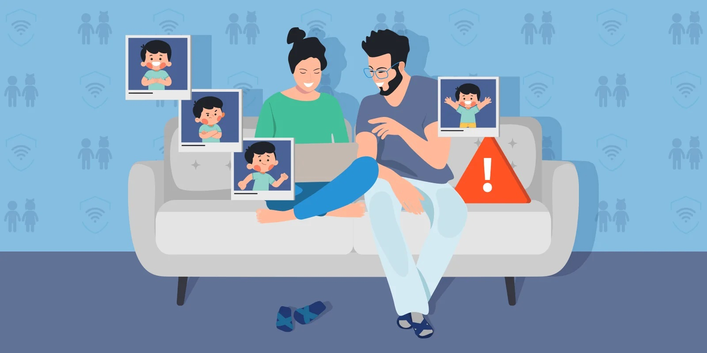
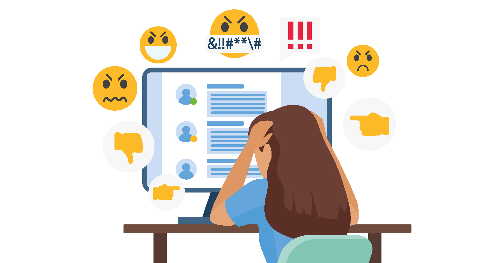

Charla informativa · Ingeniería en Informática y Sistemas · UVG
...si alguna vez les han hackeado, clonado o intentado robar una cuenta.
alguien puede aprender a encontrar esas vulnerabilidades antes que el atacante, y que a eso se le puede llamar carrera?
Hoy les vamos a contar de qué se trata la especialidad en Ciberseguridad dentro de Ingeniería en Informática y Sistemas.
Qué se estudia, qué proyectos harían y en qué podrían trabajar al terminarla.
Cifras aproximadas de la industria a nivel global
Es una de las áreas de la ingeniería con más demanda y menos gente formada para cubrirla.
Ciberseguridad es la especialidad que se enfoca en proteger sistemas, redes, aplicaciones y datos de accesos no autorizados, ataques y filtraciones.
No es solo "saber de computadoras": es entender cómo piensa un atacante para poder defenderse mejor que él.
Normalmente se cursa a partir de los últimos años de la carrera, como especialización dentro de Ingeniería en Informática y Sistemas.
0 / 5 revisadas
Estos son ejemplos representativos del tipo de proyectos que se trabajan en una especialidad de ciberseguridad.

Sacar esta especialidad abre varias rutas de carrera distintas, no solo una.
Bancos y fintech · Telecomunicaciones · Gobierno · Consultoras de seguridad · Prácticamente cualquier empresa con presencia digital
No son obligatorias para empezar, pero suman mucho en el currículum:
Son pentesters en una prueba autorizada. Encuentran una vulnerabilidad crítica que no estaba en el alcance del contrato, y el cliente ya pagó y cerró el proyecto. ¿Qué hacen?
El código de ética profesional es tan importante como las habilidades técnicas.
Nadie te va a contratar solo por saber "hackear". Te van a contratar porque confían en que vas a usar ese poder bien.
No hay preguntas tontas.

La demanda de gente formada en ciberseguridad sigue creciendo. Empezar a explorarla desde ahora es una ventaja real.
Ingeniería en Informática y Sistemas · UVG
